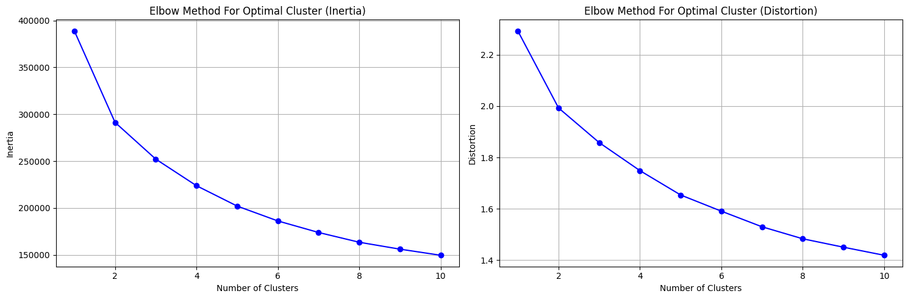
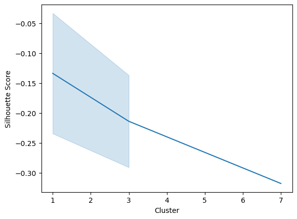
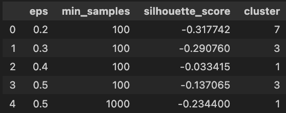
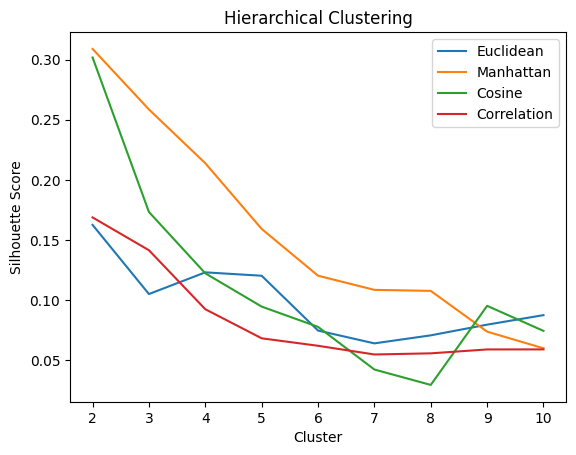
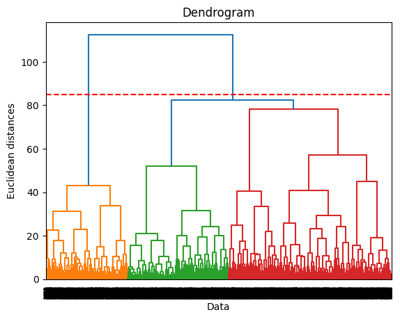
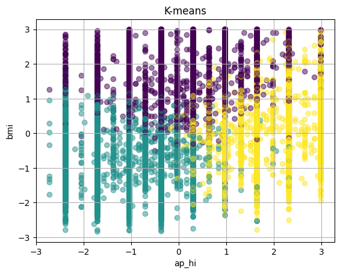
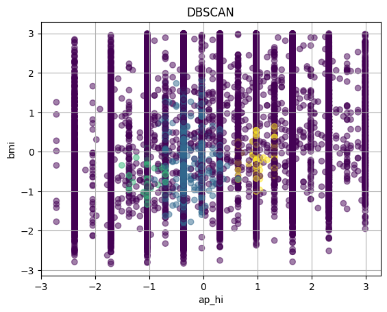
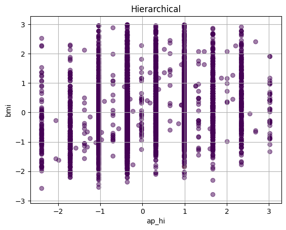
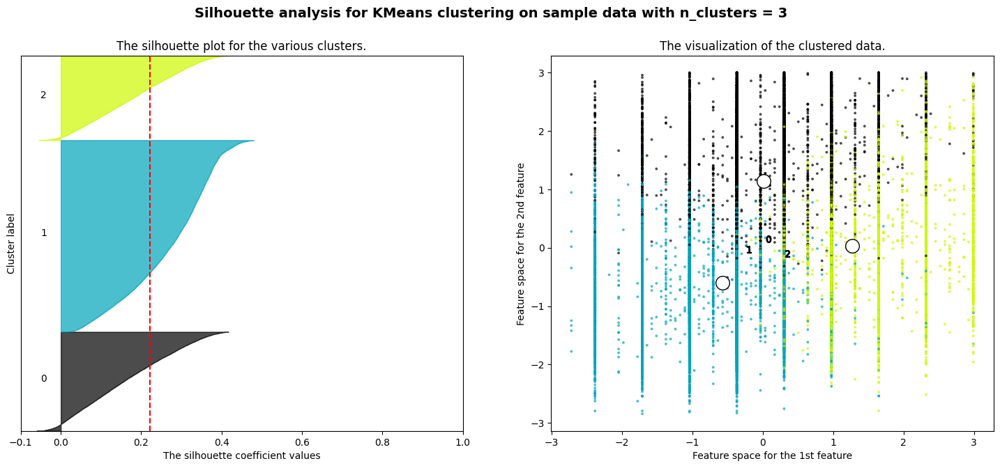

The ‘Cardio’ dataset comprises 12 features; however, for clustering purposes, only the numerical variables are pertinent. Therefore, I extracted the continuous variables to form a subset, denoted as the feature dataset X, from the original data. This curated dataset is utilized in the current project.
The objective is to employ clustering techniques to segment the dataset into distinct clusters, each representing unique cardiovascular traits. Each applied method will aim to maximize the difference between clusters. The resultant cluster groups will serve as a basis for analyzing varying levels of cardiovascular risk.
K-means is a commonly used clustering algorithm based on Euclidean distance and is a typical example of an unsupervised learning technique that does not require a labeled response. When using the K-Means algorithm, it should be noted that the number of clusters, k, is a hyperparameter and requires human input to determine. The main purpose is to find k optimal centroids based on the set K and to assign the data points closest to these centroids to the clusters represented by these centroids.
K-means clustering is widely and popularly used for cluster analysis because it is easy to interpret and implement, and the classification is effective. Even with a large number of variables, K-means can be computationally faster if a small k value is chosen. However, its accuracy may not be as high as that of supervised learning techniques, and it is also more sensitive to the choice of the k value. Moreover, it is not suitable for non-linear data.
DBSCAN (Density-Based Spatial Clustering of Applications with Noise)
The Density-Based Spatial Clustering of Applications with Noise (DBSCAN) is one of the most common clustering algorithms that identifies clusters based on the density of data points in a space. It operates by pinpointing areas where data points are closely grouped, thereby indicating that they are neighbors. Additionally, it can be used to identify non-linearly separable clusters and to mark outlier points that are situated alone in low-density regions.
Compared to the traditional K-Means algorithm, the most significant difference with DBSCAN is that it does not require the input of the number of clusters, k. It can also detect noise, effectively separating it from the clusters. However, a disadvantage of DBSCAN is its sensitivity to the choice of the ‘Eps’ and ‘MinPts’ parameters.
Hierarchical Clustering
Hierarchical clustering is a technique in cluster analysis designed to create a nested series of clusters organized hierarchically. Compared to the other two methods, Hierarchical clustering can generate a dendrogram, which allows for the visualization of different clustering results and the similarity relationships among data points.
Agglomerative clustering is the most widely used type of Hierarchical clustering for grouping objects based on their similarity. This process begins with a single cluster encompassing all data points and gradually divides it into distinct clusters using various linkage methods. The process can be visualized through a dendrogram, and the optimal number of clusters can be chosen based on these visual results.
Like DBSCAN, Hierarchical clustering does not require a predetermined number of clusters. Its advantage lies in the use of a dendrogram for enhanced visualization.
Model Selection Methods
Elbow Method: This method is used to find the optimal k value by plotting the within-cluster sum of squares (WCSS) against the number of clusters on a graph. The point where the WCSS begins to diminish, known as the ‘elbow,’ is considered an indicator of the appropriate number of clusters. When k equals 1, the WCSS value is at its largest. This method is mostly used in K-means clustering.
Silhouette Score: This metric evaluates the distance of a point to its own cluster in comparison to its distance to other clusters. The higher the score, the greater the separation between different clusters. Values range from -1 to 1, indicating poor, uncertain, and good clustering results, respectively. In essence, this measure ensures that each cluster is distinct and its members are more closely related to their own cluster than to others. The silhouette score, or silhouette coefficient, plays a crucial role in fine-tuning the hyperparameters in clustering algorithms such as DBSCAN and hierarchical clustering.
Methods
Data Selection
The labels (targets) Y is not used when I did the data selection for the clustering.
Hyperparameter tuning is a crucial step in optimizing clustering algorithms to achieve the best performance. The following hyperparameters are used in the project:
K-Means
In K-means clustering analysis, the key parameter to adjust is the number of clusters, denoted as ‘k.’ One of the primary methods for tuning this parameter is the elbow method. This involves plotting ‘k’ against measures of Inertia and Distortion to visually determine the optimal number of clusters. The ‘elbow’ point—where the rate of decrease in both Inertia and Distortion sharply changes—indicates the most appropriate value for ‘k.’ This insight is typically gained during the hyper-parameter tuning stage.

K-Means
The graph indicates that the optimal number of clusters is three. This conclusion is drawn from the observation that the reduction in Inertia and Distortion is less pronounced when moving from one to two clusters than it is from two to three clusters. According to the elbow method’s criteria, this suggests a ‘k’ value of three, where the rate of decrease in these metrics noticeably slows, signifying the most suitable cluster count.
DBSCAN
In DBSCAN modeling, the parameters ‘eps’ and ‘min_samples’ require careful tuning. The ‘eps’ refers to epsilon, a critical parameter defining the maximum distance between two points for them to be categorized as part of the same neighborhood. On the other hand, ‘min_samples’ represents the minimum number of samples required for a cluster to be defined. For ‘eps,’ the tested range includes values such as 0.1, 0.2, 0.3, 0.4, and 0.5. For ‘min_samples,’ the range spans from 100, 1000, and 5000. Given the extensive size of the dataset, exhaustive tuning across a broad spectrum of values is impractical due to the significant time investment it would require. Consequently, a narrower selection of candidate values is explored. The silhouette score, a measure of cluster cohesion and separation, guides the tuning of DBSCAN parameters. The optimal parameters are identified by the peak silhouette score. The ensuing graph showcases the results from this parameter tuning exercise.

DBSCAN
From the graph above, the highest silhouette score occurs when the number of clusters is 1. However, a cluster number of one implies that all data points are in a single cluster, which is not desirable. Therefore, the optimal number of clusters is identified as three, which yields the second-highest silhouette score. The accompanying table, detailing metrics for each ‘eps’ and ‘min_samples’ configuration, indicates that the optimal ‘eps’ is 0.5 and the optimal ‘min_samples’ is 100. This combination results in an ideal cluster count of three.

DBSCAN Table
Hierarchical Clustering
The parameters to tune include the optimal number of clusters used to split the dendrogram and the linkage criterion, which defines the rule for measuring the distance between clusters. The dendrogram and silhouette score are common methods used in hierarchical clustering.
Linkage Criterion or Distance Metrics
Different clustering algorithms can use various distance metrics, and the choice of metric can significantly influence the clusters that are formed. For example,

Hierarchical Clustering
Euclidean Distance measures the straight-line distance between two points in multidimensional space, calculated as the square root of the sum of the squared differences between the points’ coordinates.
Manhattan Distance calculates the distance between two points by summing the absolute differences of their Cartesian coordinates.
Cosine similarity gauges the similarity of two points, focusing on direction rather than magnitude, useful in text analysis and high-dimensional spaces.
In Hierarchical clustering, the correlation distance (one minus the Pearson correlation coefficient) can be used to determine the similarity between two points.
By carefully tuning parameters and choosing the right distance metric, one can greatly enhance the quality of clustering results. The Hierarchical clustering plot suggests choosing Manhattan distance as the optimal metric because it delivers the highest value among all considered metrics. However, the Manhattan distance does not produce clear results when visualized with a dendrogram. Thus, I have ultimately selected the Euclidean distance for the dendrogram, while Manhattan distance was used to achieve optimal Hierarchical clustering. The ideal number of clusters, determined by the highest silhouette value, is 2.

Dendrogram
Final Results
In summary, I have reconstructed all the models, choosing 3 clusters for K-means clustering, 3 for DBSCAN, and 2 for Hierarchical clustering. This decision was based on the elbow method previously used for K-means and silhouette analysis for DBSCAN and Hierarchical clustering.
Results
Silhouette Score
K-Means Clustering
0.2223
DBSCAN
-0.1371
Hierarchical Clustering
0.3090
According to the final results table, the silhouette score for Hierarchical clustering is the highest at 0.3090, compared to the other two methods. The higher the silhouette score, the better the clustering results. However, since the value is still relatively low, it does not provide substantial insight into the analysis. Further investigation is required. The number of optimal clusters is close among the three methods, with K-means at 3, DBSCAN at 3, and Hierarchical clustering at 2. Due to the different algorithms and the nature of each method, there will be a small variance in the optimal cluster numbers. Overall, the results align with one another.

2D Visualization


Based on the analysis of the three plots, the K-means clustering plot appears to be the most effective.Overall, the number of clusters matches between different methods, but the data points within each group vary significantly from one method to another. The scatter plot clearly visualizes the data points and their assigned cluster labels, showcasing distinct grouping patterns and separation between clusters, allowing for the identification of three distinct groups.
In contrast, the silhouette score for DBSCAN is negative, indicating it is an unsuitable choice. Furthermore, the scatter plot for DBSCAN divides the data into three clusters and one noise cluster, offering no clear visual conclusions. In the Hierarchical clustering plot, the data points are divided into two groups, but one group contains only a single value, rendering it indistinct in the visualization. This essentially equates to dividing the entire dataset into a single cluster, which does not meet our expectations, despite it having the highest silhouette score among the three.
Therefore, K-means emerges as the more reasonable option, with a clearer division of clusters and a comparatively high silhouette score, making it the optimal model. Additionally, the labels could reflect three categories—high, medium, and low cardiovascular risk—rather than a binary distinction of cardiovascular disease presence.
Conclusions

In conclusion, the optimal clustering algorithm for the dataset appears to be the K-means method. It achieves relatively better scoring measures compared to others and effectively divides the data into distinct groups based on visualization.
A crucial aspect of using K-means or any other clustering method is determining the true labels for each cluster group. Since clustering is an unsupervised method, true labels are not known for unseen testing data. Even though true labels are available in this dataset and can be used to evaluate the results, it is still impractical to assign specific labels such as “cardiovascular” or “non-cardiovascular” to any particular cluster. Moreover, the accompanying graph suggests a pattern that may justify dividing the dataset into three risk categories—high, medium, and low—when setting the number of clusters to three. This introduces an additional layer of complexity in defining group characteristics as the number of clusters increases. Additional data would be required for more accurate labeling of each group.
Furthermore, the measurement scores are not high for any of the three clustering methods, indicating limited practical utility for these clustering techniques. Future research may benefit from a supervised approach to directly predict labels, which could be a more effective modeling method for the current research objectives.
Note
In the cluster analysis of the ‘cardio’ dataset, I chose to work with 10% of the full dataset for Hierarchical clustering due to the algorithm’s time-intensive nature, which might introduce a selection bias. In the final results, ‘bmi’ and ‘ap_hi’ were selected as variables for visualizing the 2D clustering. ‘Bmi’ effectively encapsulates information on both weight and height, while ‘ap_hi’ serves as a reliable indicator of systolic blood pressure, making them informative dimensions for interpretation.